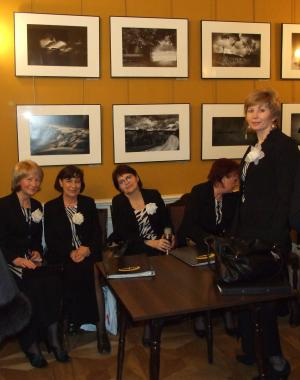
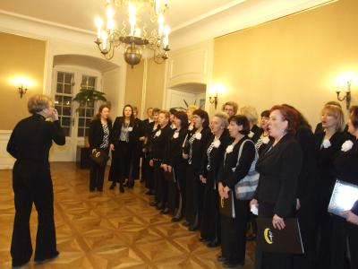
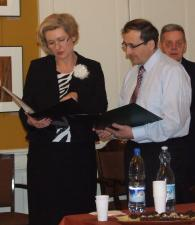
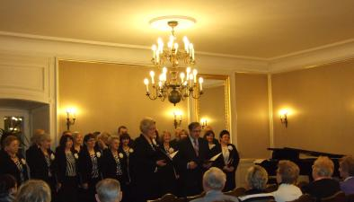
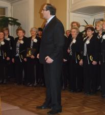
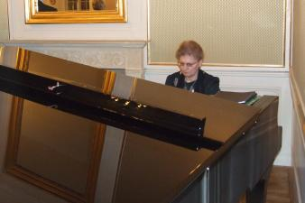
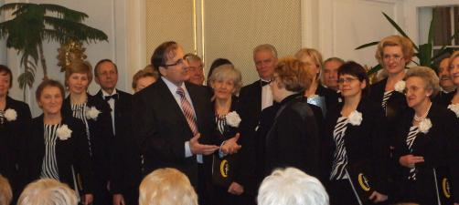

A tymczasem w Cameracie...
.
2012-03-12
Mimo paskudnej, ponurej, deszczowej pogody, chór uśmiechnięty „od ucha do ucha”. Przebieramy się, żartując i rozmawiając.
A potem szybciutko udajemy się na próbę do Sali Kominkowej Dworku Białoprądnickiego. Trzeba się dobrze rozśpiewać przed koncertem, bo utwory trudne.

Koncert rozpoczynają Ela Achinger i Konrad Szota krótkim wprowadzeniem, wesołą fraszką Ewy Roeske-Tracz.
 
Potem „pałeczkę” przejmuje p. dyrygentka Izabela Szota. Opowiada o utworach, które śpiewamy, o autorach i kompozytorach, no i oczywiście dyryguje chórem.
Gościnnie również śpiewa p. Konrad Szota - baryton Opery Krakowskiej. Akompaniuje nam dzisiaj cudnie p. prof. Małgorzata Westrych.
 
Śpiewa też oczywiście p. Izabela Szota.
Małżonkowie zaśpiewali piękny duet ze „Skrzypka na dachu”.

Na koniec nagrodzono nasz koncert brawami na stojąco, więc chyba się podobało.Zobacz

© Stowarzyszenie Muzyczne Chór Camerata Wieliczka